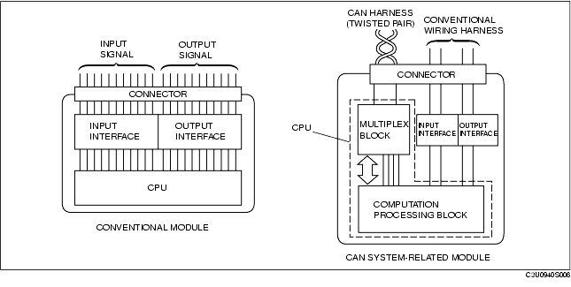
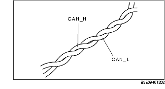
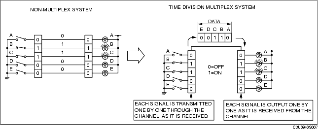
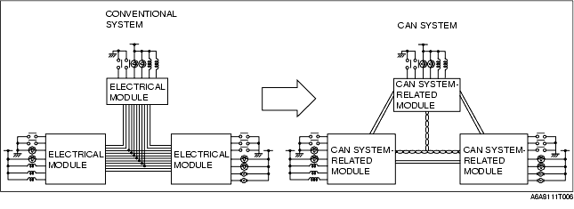
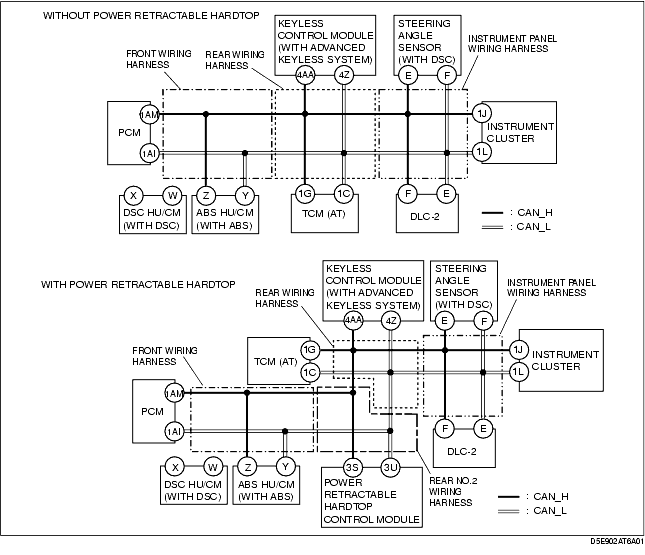
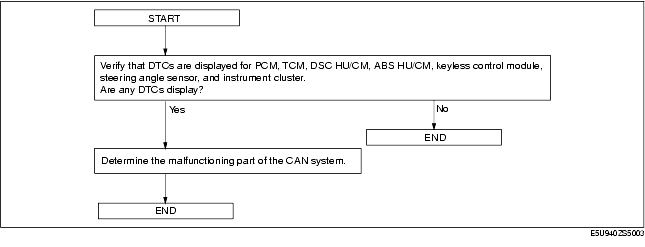
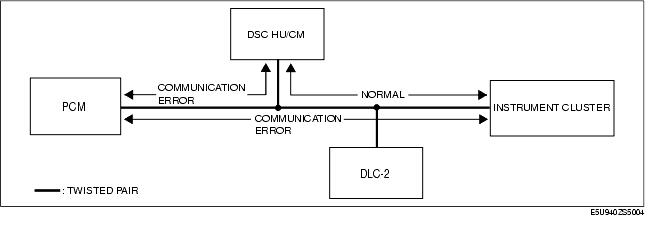

Technical Guide ➭ BODY & ACCESSORIES ➭ CONTROL SYSTEM ➭ CAN SYSTEM DESCRIPTION
CAN SYSTEM DESCRIPTION
id094000101000
Mechanism of CAN System-Related Module
• A CAN system-related module is composed of an electrical circuit, CPU, and input/output interface.
• The size of the module has been reduced due to the elimination of the bulky, superfluous, input/output interface in the conventional type of electrical module.
• The CPU (multiplex block) controls all signals exchanged on the CAN harness.
• Communication with non-multiplex parts is carried out by conventional input/output interface.
• The functions of each component are shown below.

Twisted Pair
• The multichannel use two spirally twisted wires called a twisted pair, and each wire, CAN_L and CAN_H, has its own special function.

• Both bus lines are opposite phase voltage. This allows for minimal noise being emitted and makes if difficult for noise interference to be received.
Time Division Multiplex
• For information exchange between electrical modules in a conventional system, a wire connection was necessary for each information signal. However, by sending the different signal at varying times over one channel, it is possible to send a large amount of information via a small wiring harness.
• In the conventional, non-multiplex system, in order to control the illumination of the five bulbs, one switch and one channel was necessary for each bulb. For bulbs B and C to illuminate, switches B and C must be ON and electricity must flow through the channel. With the time multiplex system, this can be done through one channel. The channel is comprised of five data signal transmitters which transmit either a "0" or "1" signal to indicate whether a bulb turns ON or OFF. For example, to illuminate bulbs B and C, transmitters B and C transmit a "1" and transmitters A, D, and E transmit a "0". When the receiver receives these signal, bulbs B and C illuminate.

Vehicle CAN System
• By rearranging the multiple signal, common information between the CAN system-related modules is transmitted and received through the multichannel.
• The signal transmitted by one CAN system-related module is sent through the multichannel to all the CAN system-related modules, but only the concerned module (s) receives the signal and performs the appropriate operation (ex. light illumination, fan operation).

CAN Signal-Chart
On-Board Diagnostic Function
• Some DTCs have been changed.
• The on-board diagnostic function is incorporated into the following module:
- PCM - TCM (AT) - DSC HU/CM (with DSC) - ABS HU/CM (with ABS) - Keyless control module - Steering angle sensor - Instrument cluster - Power retractable hardtop control module (with power retractable hardtop)
• This function can narrow down CAN system malfunction locations.
• The on-board diagnostic function consists of the following functions.
- Failure detection function, which detects DTCs malfunctions in CAN system-related parts. - Memory function, which stores detected. - Self-malfunction diagnostic function, which indicates system malfunctions using DTCs and warning lights.
• Using the Mazda Modular Diagnostic System (M-MDS), DTCs can be read out and deleted.
• The CAN system has a fail-safe function. When a malfunction occurs in CAN system, the transmission module sends a warning signal and the receiving module illuminates the warning light.
Block diagram

Failure detection function
• The failure detection function in each CAN system-related module detects malfunctions in input/output signals. • This function outputs the DTC for the detected malfunction to the DLC-2, and also sends the detected result to the memory function and fail-safe function.
Fail-safe function
• When the failure detection function determines that there is a malfunction, the fail-safe function illuminates a warning light to inform the driver of the malfunction.
Memory function
• The memory function stores the DTC for the malfunction of input/output signals for related parts, as determined by the failure detection function.
Self-malfunction diagnostic function
• The self-malfunction diagnostic function determines that there is a malfunction, and outputs a signal, as a DTC, to the DLC-2. The DTC can be read out using the Mazda Modular Diagnostic System (M-MDS).
DTC table
Narrowing down malfunction locations
• The on-board diagnostic function, by verifying the detected DTC information from each module, can narrow down a CAN system malfunction location. Refer to the self-malfunction diagnostic function for detailed information regarding DTCs. (SeeSelf-malfunction diagnostic function.)

Example (PCM-related communication error)
• This example is for MT with DSC.
- DTCs for the PCM, DSC HU/CM, steering angle sensor and instrument cluster can be verified using the Mazda Modular Diagnostic System (M-MDS).
